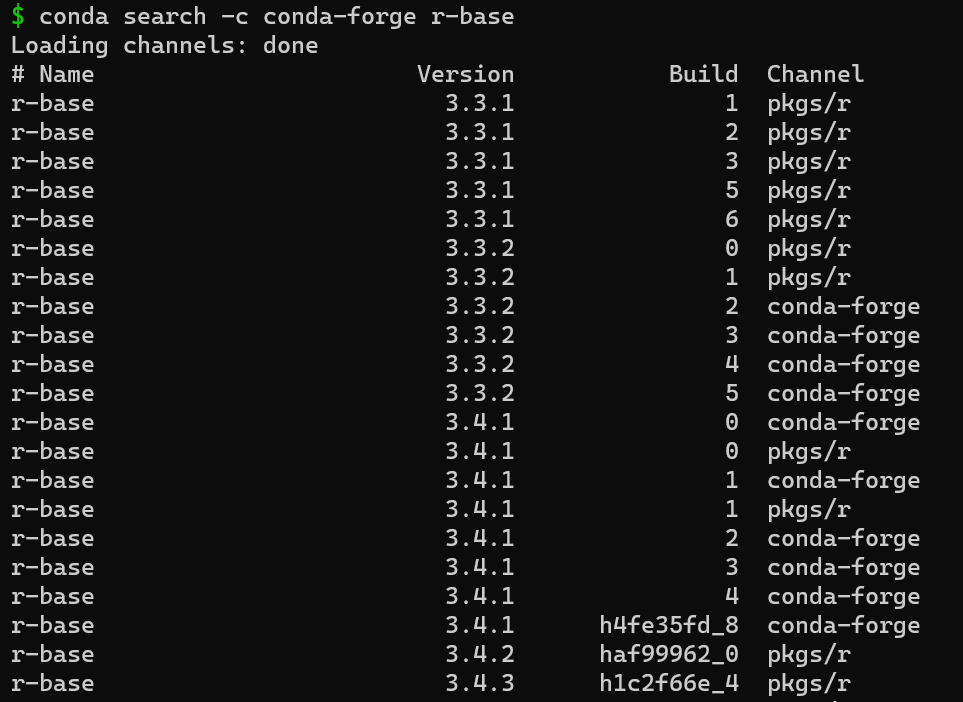
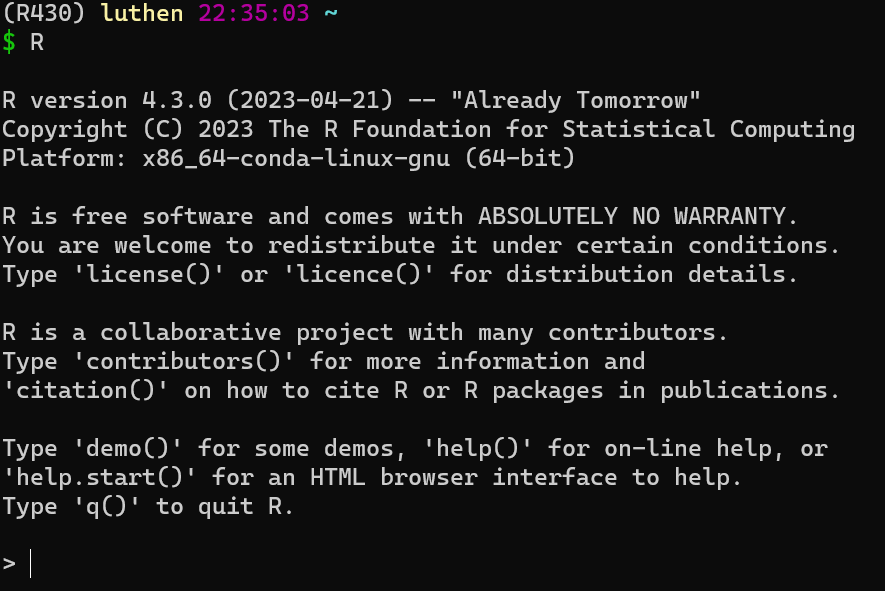
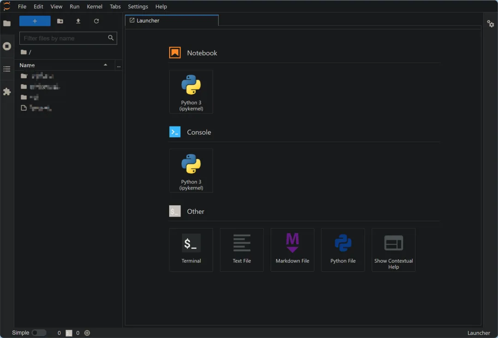
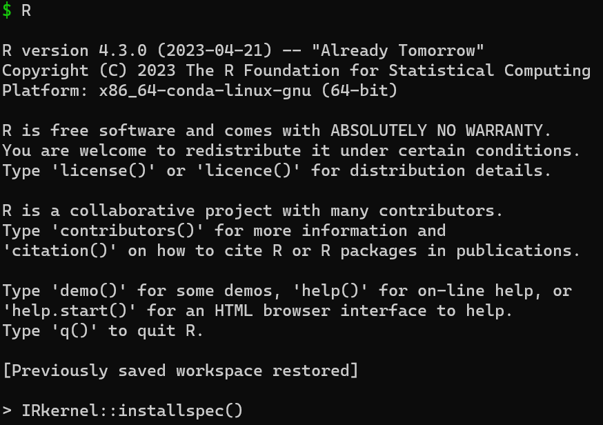
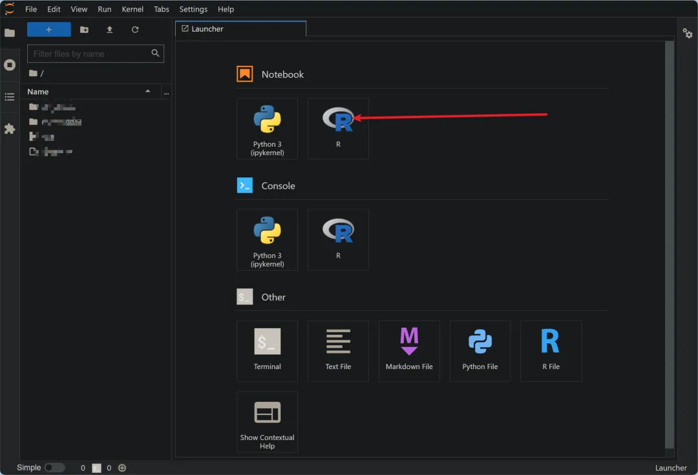
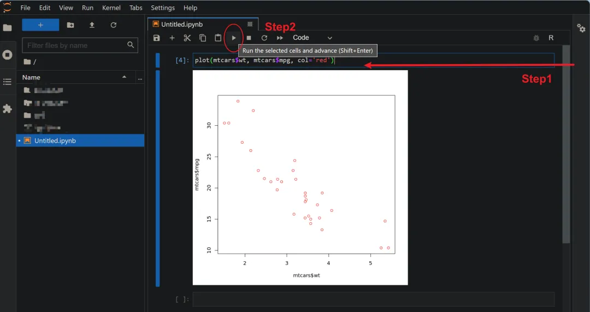
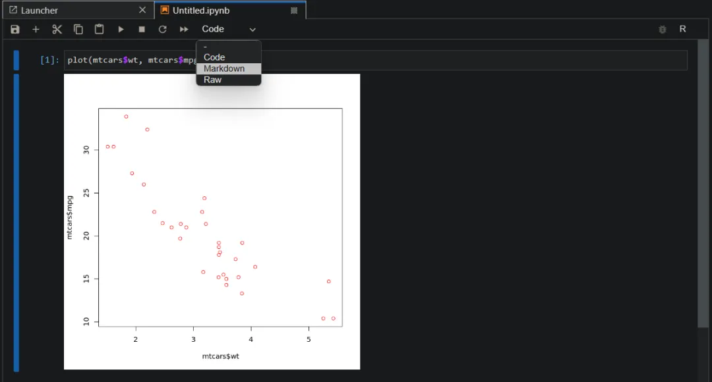
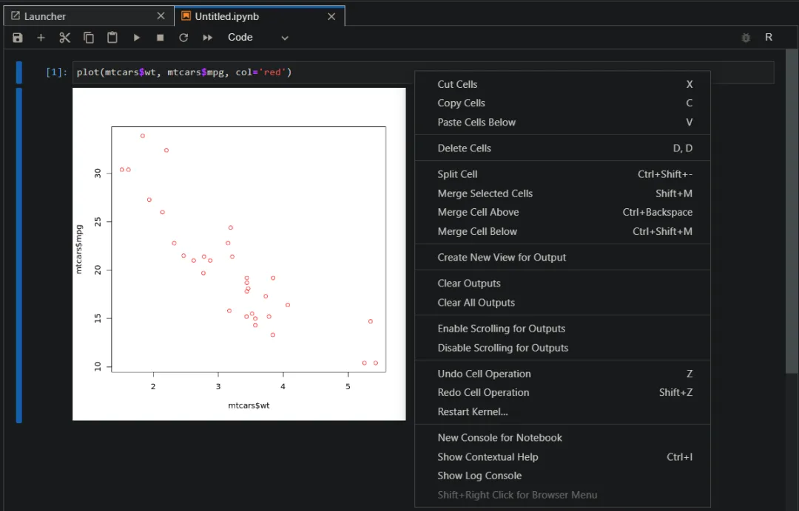
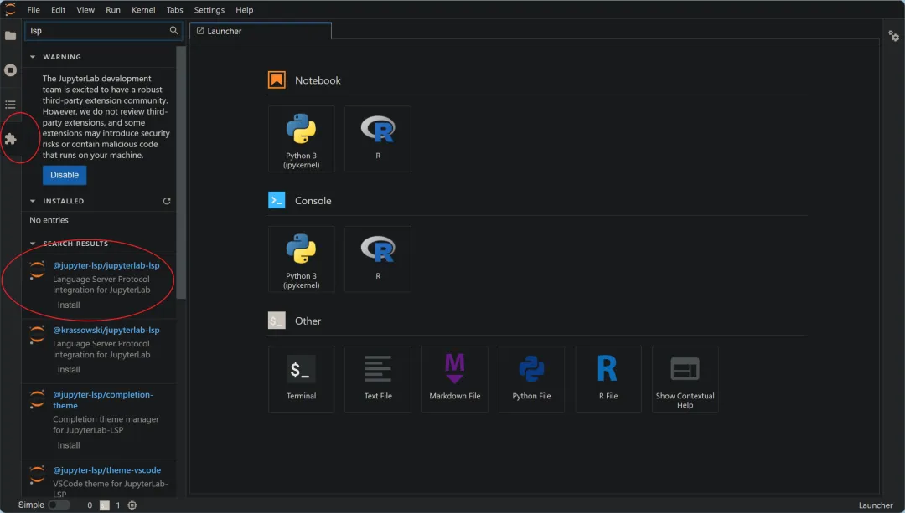

如何在没有root权限的情况下使用R语言
原文：https://mp.weixin.qq.com/s?__biz=MzAwMzIzOTk5OQ==&mid=2247510663&idx=1&sn=4d572352e146e60668ed667f42efc070&chksm=9b3cd3d7ac4b5ac1c47b4cc7cc17823c2c37091fc89d07054844bd539f3eb251f1c540269590#rd 合集：粉丝来稿
01
写在前面
大部分共享服务器没有root权限(当然也有例外：有root权限的共享服务器,报我名字立减200￥)，装不了Rstudio-server。而R终端 虽然可以完成一些基本任务，但对于数据分析、画图等高级操作则显得不够便利。因此，我们需要一种能够轻松应对这些任务的IDE。幸运的是，Jupyterlab 为我们提供了一个交互式计算环境，让我们可以直接输入代码并立即查看结果。这个功能强大的工具已经成为了数据分析领域的瑰宝，被广泛应用于各种数据分析、可视化等任务中。接下来，我们就来在Linux中配置能够使用R语言的Jupyterlab吧。
02
**安装并配置juputer的R语言环境 **
创建R语言的虚拟环境
首先，我们需要用conda创建一个含有R语言的虚拟环境，这样也方便管理不同的R版本。在Linux终端中运行以下命令查找R不同版本：
conda search -c conda-forge r-base
结果：

然后我们就可以根据需求下载合适版本啦，这里我选择比较新的R4.3.0，先创建一个新的R环境：R430，然后安装，命令如下：
conda create -y -n R430
conda activate R430
conda install -y -c conda-forge r-base==4.3.0
安装完成之后，在终端中输入R，结果如下证明安装成功：

接着安装必须的R包"IRkernel"
install.packages("IRkernel", repos="https://mirrors.tuna.tsinghua.edu.cn/CRAN/")
之后，退出R，准备安装Jupyterlab
安装Jupyterlab
直接运行：
conda install -y jupyterlab
#安装成功之后，在terminal中输入命令：
jupyter-lab
我们会看到一大串信息，此时我们需要复制以下链接，在浏览器中打开：
界面如下：

这就是Jupyterlab的界面了，此时我们可以新建并运行Python文件，但还没有R语言的，所以下一步我们需要将R语言和Jupyterlab关联起来。
关联R和Jupyterlab
再激活jupyter-lab之后，如果要退出的话很简单，只需要在终端中Ctrl+C并确认即可。然后我们再次运行R，在命令行中输入：
IRkernel::installspec()

运行完成退出即可，再次运行jupyter-lab，打开链接，此时我们可以看到Jupyter中出现了R！然后我点击就可以创建一个新的R脚本文件了：

然后在单元格中输入简单的代码测试，使用快捷键Shift+回车或者点击圆圈中的按钮即可运行代码：

每个单元格的运行结果会在下面展示。单元格除了代码之外还可以添加markdown，右键单元格我们还可以看到一系列操作：


运行结束后我们记得Ctrl+S保存代码哦！


如何联系我们

 公众号后台消息回复不便，这里给大家留一下领取资料及免费服务器(足够支持你完成硕博生涯的生信环境)的微信号 ，方便各位随时交流、提建议（别问在么，添加时直接说来意）。此外呼声一直很高的交流群 也建好了，欢迎大家入群讨论：
公众号后台消息回复不便，这里给大家留一下领取资料及免费服务器(足够支持你完成硕博生涯的生信环境)的微信号 ，方便各位随时交流、提建议（别问在么，添加时直接说来意）。此外呼声一直很高的交流群 也建好了，欢迎大家入群讨论：
大家可以阅读完这几篇之后添加给生信入门初学者的小贴士 如何搜索公众号过往发布内容

 您点的每个赞和在看，我都认真当成了喜欢
您点的每个赞和在看，我都认真当成了喜欢